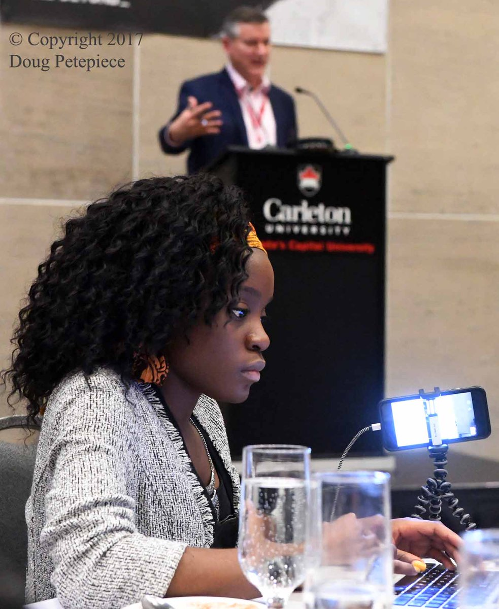
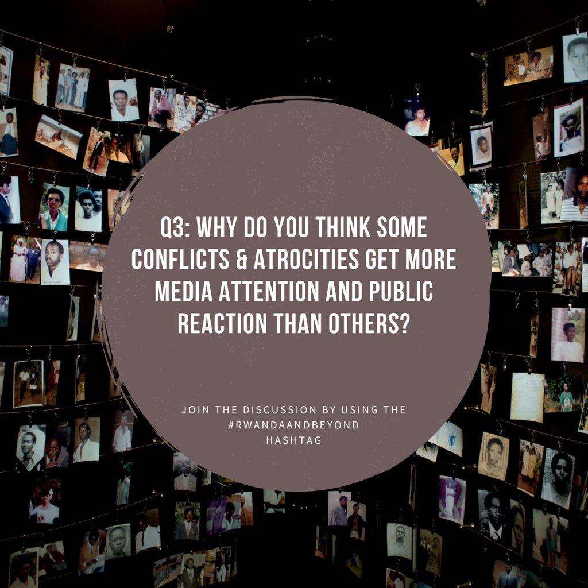
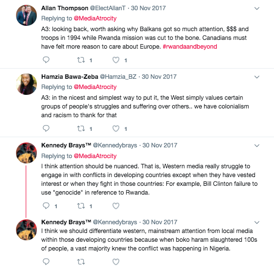
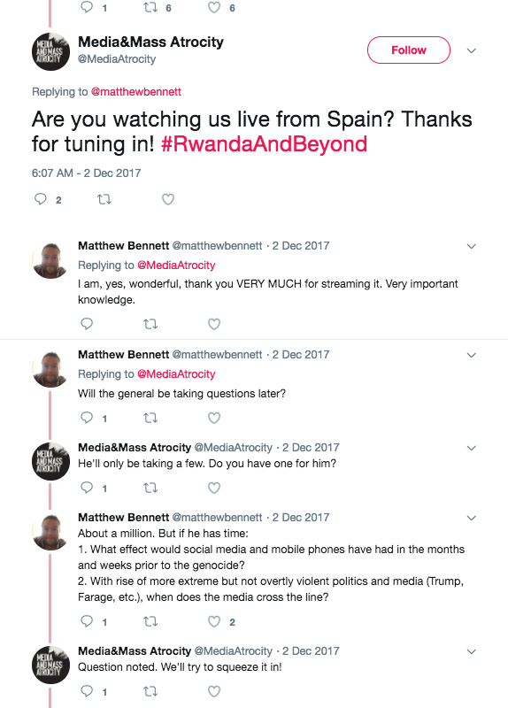
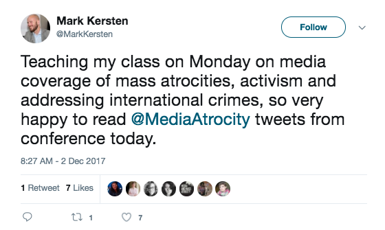
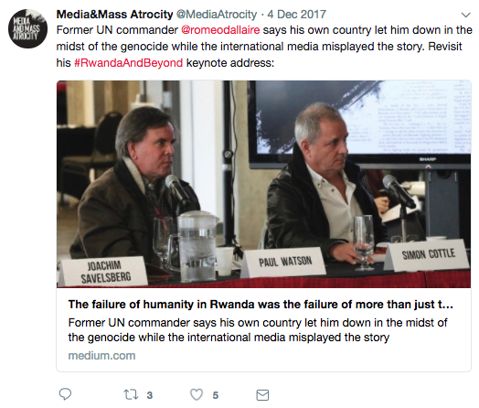
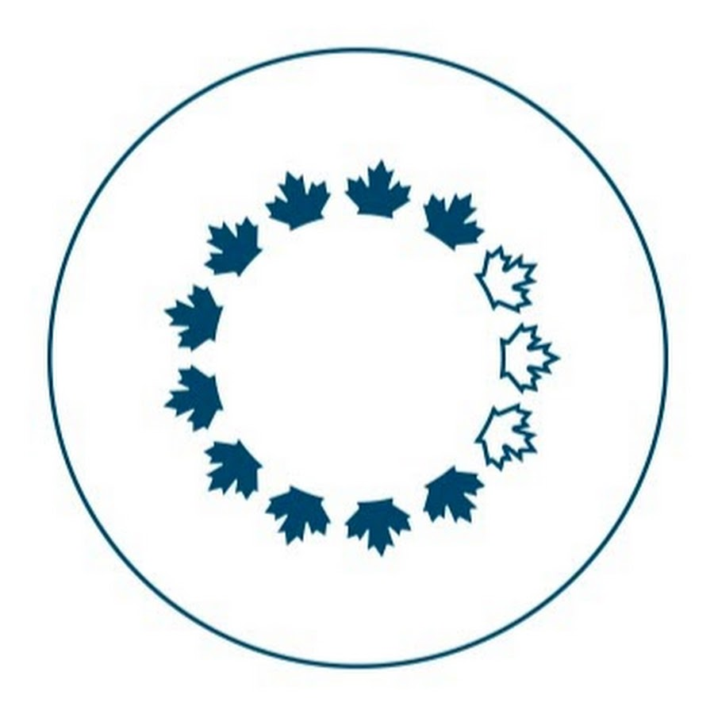

When I was 15, I launched OTwaddup.com - a blog about arts and culture in my hometown, Ottawa. Although that was a while ago, I like to believe that this is where my journey in media began.
I then enrolled at Carleton University in a Combined Honours Bachelor of Journalism and African Studies. These past four years have allowed me to build on existing interests to develop strong journalism and communications skills.
Media And Mass Atrocity: The Rwanda Genocide and Beyond
This international conference brought together some of the world's leading scholars on the 1994 Rwanda Genocide.
Here are highlights of my time as the Social Media Coordinator of the event:
- Avg. 20 link clicks per day
- Avg. 18 Retweets per day
- Avg. 20 likes per day
- Avg. 3 replies per day
- Avg. 1.9% Engagement Rate, with peaks between 2.4 - 2.8%
- #RwandaAndBeyond trending in Canada
- Engaged a worldwide audience

Twitter Chat


Worldwide Participation


Tasks
As the Social Media Coordinator for the conference, I:
- Created all Twitter messages to promote the conference
- Scheduled posts using Hootsuite
- Live-tweeted on conference days, and interacted with worldwide audience
- Created a trackable social media hashtag, #RwandaAndBeyond
- Hosted a Twitter Chat, and personally contacted key speakers, partners, and audience members to invite them to participate


National Capital Commission
The National Capital Commission is a federal crown corporation that owns and maintains most parkways, monuments, parks, and heritage sites in Canada's capital. During my two years as a member of their strategic communications team, I completed numerous tasks. Here are a selected few related to social media:
- Created weekly English and French content for 16 social media accounts - Gatineau Park, Rideau Canal Skateway, National Capital Commission, and Capital Urbanism Lab. (Each have an account in both languages on Facebook and Twitter).
- Social media lead for Gatineau Park and Urbanism Lab accounts
- Contributed to monthly content calendars working in liasing with the social media coordinator
- Introduced team to Instagram planning tool Planoly, and helped create monthly themed IG content calendars
- Shot over 500 pictures for the corporate content library
- Shot and edited 7 videos for various #Canada150 initiatives
- Live-tweeted and live-streamed over 50 events
- Prepared tweet decks and event roll-outs for numerous events, including most media launches of the #Canada150 Confederation Pavilions initiative, the unveiling of the Plan for Canada's Capital, and more.


I also very recently began interning with Sunday School.
I'll be graduating with a Combined Honours Bachelor of Journalism and African Studies this season. Here are my storytelling and communications skills at use in other ways:
Ghost-blogging
It’s peregrine falcon nesting season in Gatineau Park
The Canada 150 tulip was a labour of love and national pride
Harmful Plants in the Capital
Five tips to enjoy Gatineau Park and respect Park wildlife
Tick Safety in the Capital
Journalism (print)
Twice as many family physicians needed to replace retiring doctors / The Windsor Star
Dufour credits Motown sound for Juno honour / The Windsor Star
MacEwan University Victim of $11.8 Million Phishing Scam / The Charlatan
History of the Rwanda genocide has become the subject of conflicting narratives / Rwanda And Beyond
You can find more of my work here.
Video
Tools I Know How To Use
Hootsuite, Buffer, Planoly, Trello, Slack, Adobe Audition, Photoshop, Lightroom, InDesign, Final Cut Pro, Canva, Audacity, Wordpress (and other platforms), Microsoft Suite...
HTML/CSS (basic), and Git - which I used to (very quickly!) code this portfolio myself.
Contact
I'm looking for professional opportunities to merge my personal intersts (music, creative arts, culture, community) with my existing skills.